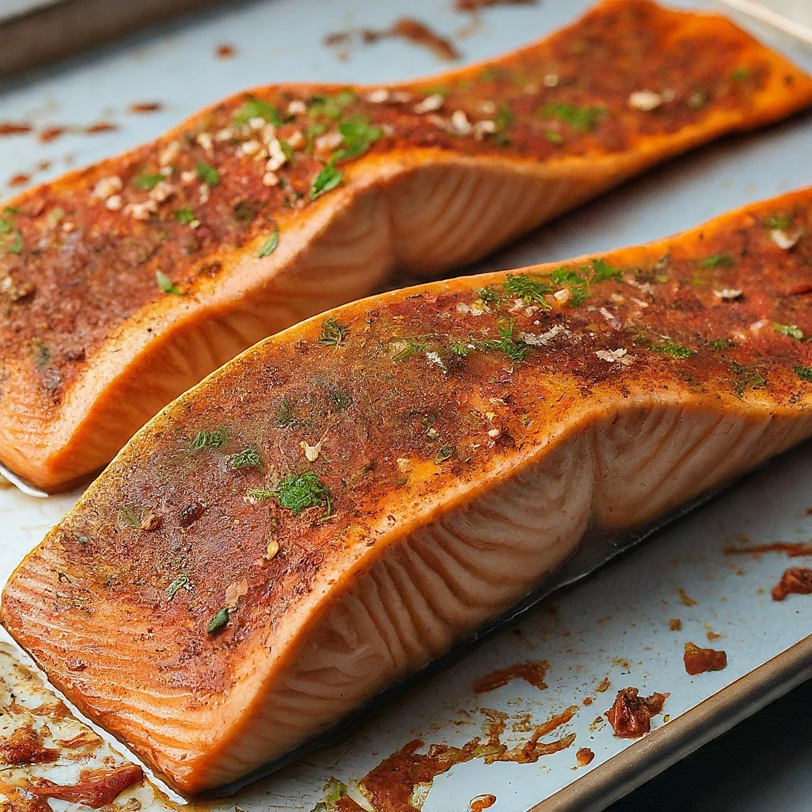

Oven Baked Salmon
Ingredients:
2 salmon fillets (around 6 oz each)
1 tablespoon olive oil
1 tablespoon lemon juice
1/2 teaspoon dried dill (or 1 tablespoon fresh dill, chopped)
1/4 teaspoon garlic powder
Salt and freshly ground black pepper, to taste
Optional: Chopped fresh parsley (for garnish)
Instructions:
Preheat your oven to 400°F (200°C). Line a baking sheet with parchment paper for easy cleanup.
Pat the salmon fillets dry with paper towels. Season both sides generously with salt and black pepper.
In a small bowl, whisk together olive oil, lemon juice, dill, and garlic powder.
Place the salmon fillets skin-side down on the prepared baking sheet. Brush the tops of the salmon with the prepared lemon-herb sauce.
Bake the salmon for 12-15 minutes, or until the flesh is opaque and flakes easily with a fork. The exact cooking time may vary depending on the thickness of your fillets.
Once cooked, remove the salmon from the oven and let it rest for a few minutes before serving. This allows the juices to redistribute for a more moist and flavorful fish.
(Optional) Garnish with chopped fresh parsley before serving.
Tips:
If you prefer a crispier skin, you can broil the salmon for the last minute or two of cooking. Just keep a close eye on it to avoid burning.
To test for doneness, gently insert a fork at an angle into the thickest part of the salmon. If it flakes easily and the center is no longer translucent, it's cooked through.
Elevate the flavors by adding other herbs to the sauce, such as thyme, rosemary, or oregano. You can also try a pinch of red pepper flakes for a bit of heat.
This recipe is easily adaptable to different flavors. Try using a teriyaki glaze, a honey mustard sauce, or a simple marinade with soy sauce, ginger, and garlic.
Enjoy your delicious oven-baked salmon!